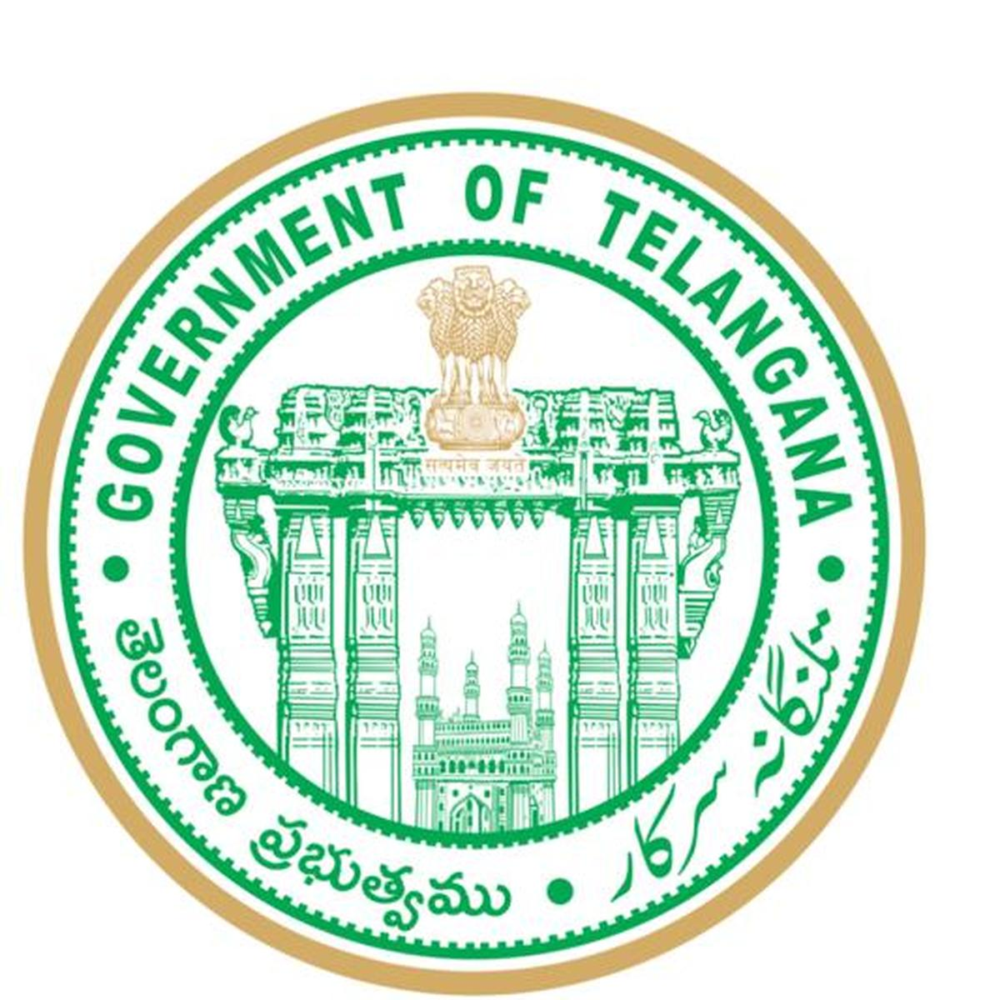
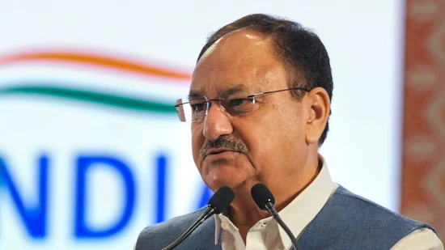

Telangana updates
supply disruption in Hyderabad on Thursday due to pipeline repairs
Nursing student ends life in Nacharam
Telangana Discoms propose revised power tariffs, TGERC to hold public hearings
L&T Hyderabad Metro Rail’s official X account hacked
Intermediate student injured after jumping from school building in Maheshwaram
Congress government plans to shift JNAFAU to BRAOU campus
Hyderabad: Traffic advisory issued in view of Milad-Un-Nabi processions
Teenager stabbed to death over quarrel in Musheerabad
Hyderabad: Seven persons injured in explosion at a house in Bahadurpura
Telangana Cyber Security Bureau nabs money mule
Hyderabad: Aarogya Mitra launch indefinite boycott of duties
In letter vs letter, BJP chief Nadda writes to Congress'
Kharge over Rahul Gandhi: ‘Attempt to polish failed product’
Mallikarjun Kharge on Tuesday wrote to Prime Minister Modi, expressing his “concern and disappointment” over remarks made against Rahul Gandhi.

BJP National President and Union Minister JP Nadda(PTI)
Bharatiya Janata Party national president JP Nadda launched a scathing attack on his Congress counterpart Mallikarjun Kharge on Thursday,
two days after the latter wrote to Prime Minister Narendra Modi, expressing his “concern and disappointment” over remarks made against
Leader of Opposition in the Lok Sabha Rahul Gandhi.